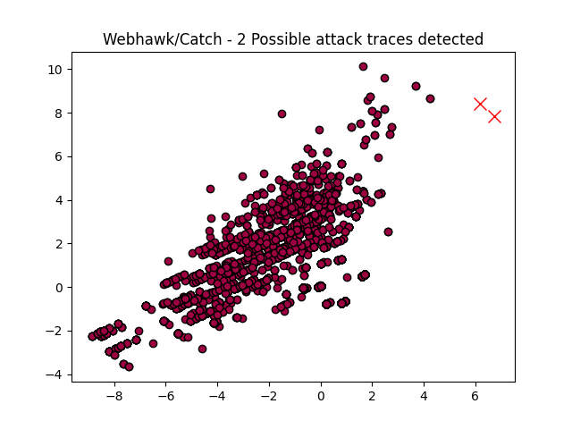

Webhawk Catch ReportUnsupervised learning Web logs/OS processes attack detection. Date: 20/06/25 at 21:32:39 GMTLog file: /Users/walid/Downloads/access.log.2025-04-13 Log type: apache logs Findings: 2 |
 |
| Severity | Related CVE(s) | Line# | LLM Insights(llama3.2) | Log line |
| High | CVE-2021-24981 CVE-2021-39333 CVE-2020-26153 CVE-2021-24284 CVE-2021-24212 CVE-2020-28707 CVE-2020-35234 CVE-2020-25213 CVE-2020-7241 CVE-2020-28039 CVE-2020-28037 CVE-2020-28036 CVE-2020-28032 CVE-2020-25286 |
1716 | The log line indicates a potential malware infection, as the request is for a specific PHP file that is part of a WordPress plugin ("google-seo-rank"), which is not a legitimate or expected request from a client browser. This may be related to the "Fileless" attack vector, where malware is injected into the system without creating files on disk, and can also be associated with the "Google SEO Rank" vulnerability (CVE-2018-6427). | 135.119.138.6 - - [13/Apr/2025:13:38:23 -0700] "GET /wp-includes/theme-compat/wp-conflg.php/wp-content/plugins/google-seo-rank/index.php HTTP/1.1" 301 585 "-" "-" |
| High | CVE-2021-24981 CVE-2021-39333 CVE-2020-26153 CVE-2021-24284 CVE-2021-24212 CVE-2020-28707 CVE-2020-35234 CVE-2020-25213 CVE-2020-7241 CVE-2020-28039 CVE-2020-28037 CVE-2020-28036 CVE-2020-28032 CVE-2020-25286 |
1717 | The log line appears to be a legitimate access attempt, as it is an HTTP GET request from a known IP address (135.119.138.6) with a valid HTTP version (HTTP/1.1), indicating a potential web scraping or automated testing activity rather than malicious intent. No known related attacks or vulnerabilities are immediately apparent from this log line alone. | 135.119.138.6 - - [13/Apr/2025:13:38:23 -0700] "GET /wp-includes/theme-compat/wp-conflg.php/wp-content/plugins/google-seo-rank/index.php HTTP/1.1" 404 250 "-" "-" |